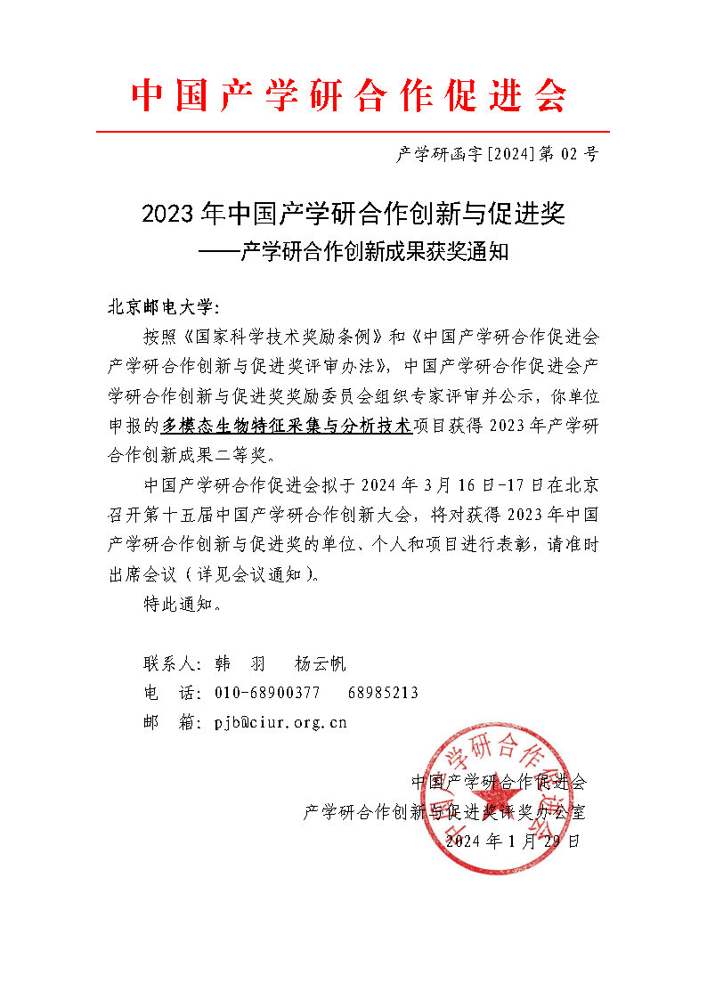
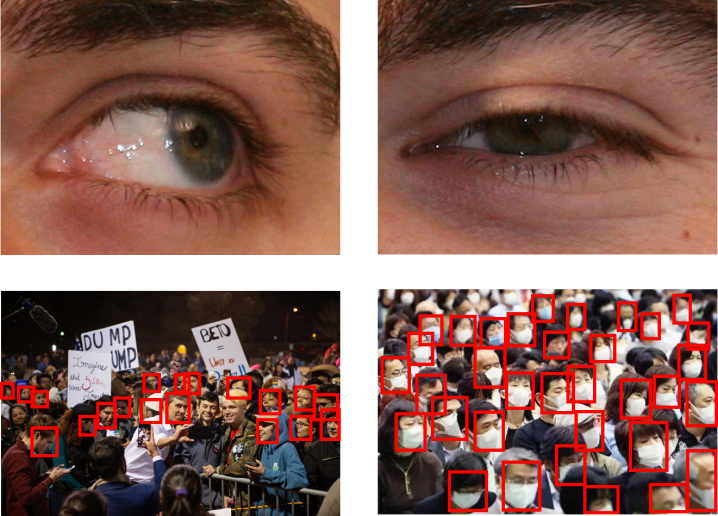
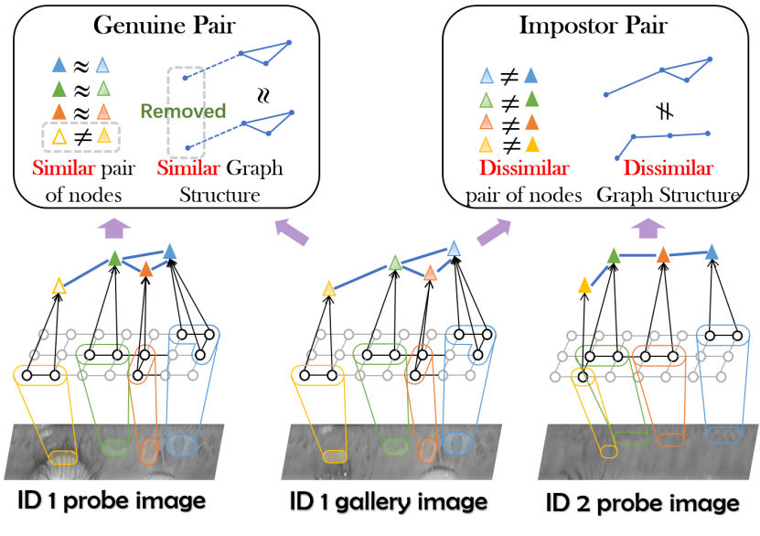
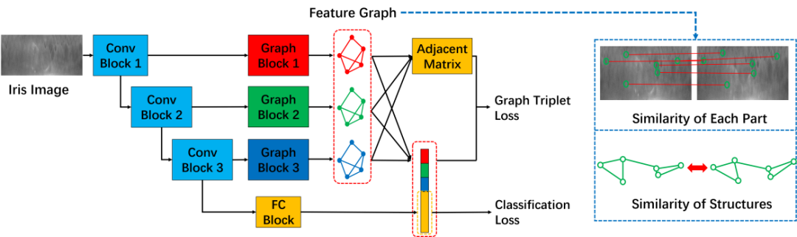
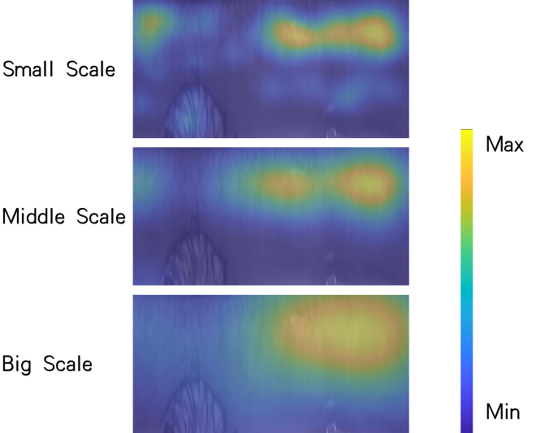
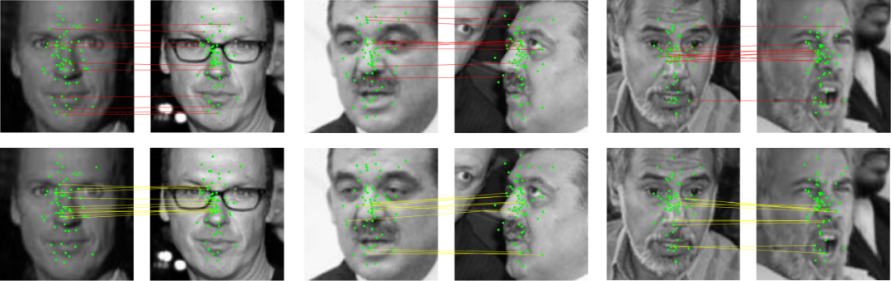

#Biometric Recognition
完成单位：北京邮电大学、中国科学院自动化研究所、北京声智科技有限公司、北京中科虹霸科技有限公司、北京嘀嘀无限科技发展有限公司
主要完成人：何召锋、李佩佩、项刘宇、王云龙、邱显超、陈孝良、李琦、裴仁旺、常乐、王兴华

作者信息：
任民（北京师范大学），王云龙（中国科学院自动化研究所），朱宇豪（中国铁道科学研究院），张堃博（中国科学院自动化研究所），孙哲南（中国科学院自动化研究所）
收录期刊：
IEEE Transactions on Pattern Analysis and Machine Intelligence (IEEE TPAMI)
论文DOI:
https://ieeexplore.ieee.org/document/10193782
代码链接：
https://github.com/RenMin1991/Dyamic-Graph-Representation
中国图象图形学学会CSIG：【速览】IEEE TPAMI 2023 | 解决遮挡生物特征识别的多尺度动态图表达框架
    